Diversidad
Costa, Sierra, Amazonía y Galápagos poseen diferentes características agrícolas.
Conoce cómo la tecnología, la innovación y el conocimiento pueden transformar la agricultura ecuatoriana.
Ecuador posee una gran diversidad agrícola gracias a sus diferentes regiones naturales. AgroFuturo busca mostrar esta riqueza y explicar cómo la tecnología puede contribuir a una producción más eficiente, responsable y sostenible.
Costa, Sierra, Amazonía y Galápagos poseen diferentes características agrícolas.
Las nuevas tecnologías pueden mejorar las decisiones y procesos agrícolas.
El uso responsable de los recursos ayuda a construir una agricultura más sostenible.
Explora algunos productos representativos de las diferentes regiones del Ecuador.

Uno de los cultivos más representativos de la región Costa y un producto agrícola importante del Ecuador.
🌴 Costa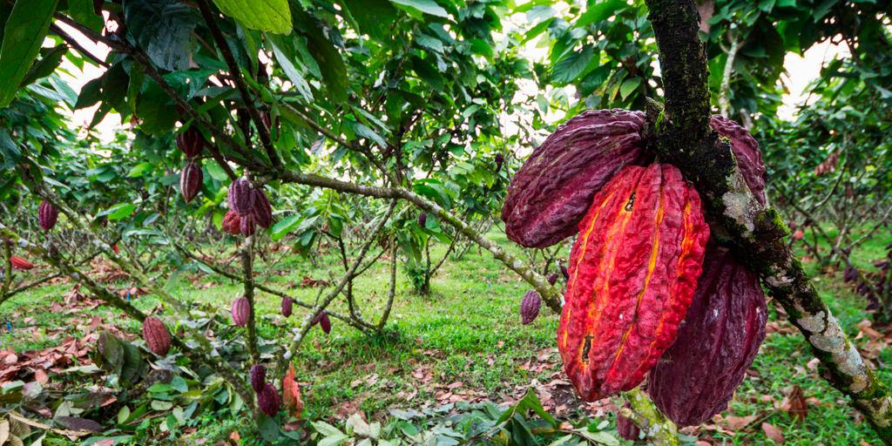
Cultivo de gran importancia para Ecuador, reconocido por la calidad de sus granos y su producción en zonas tropicales.
🌴 Costa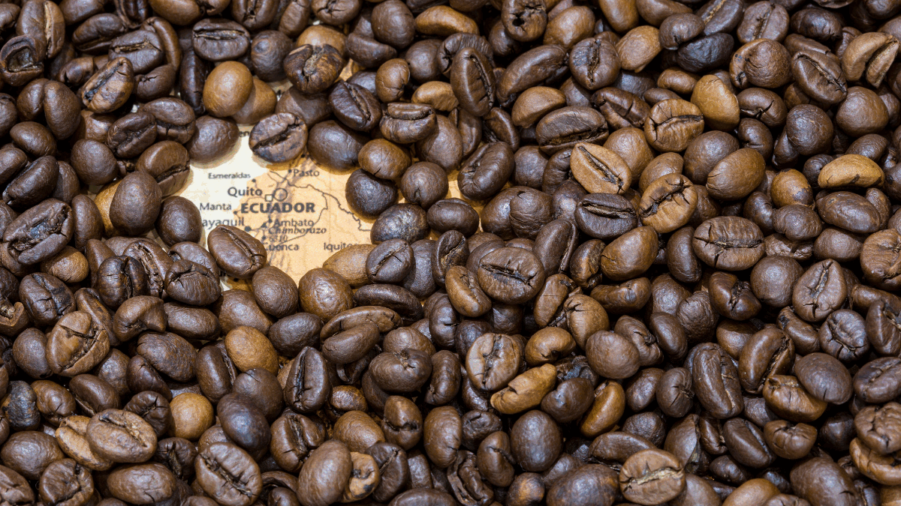
Se cultiva en diferentes zonas del país y destaca por la variedad de condiciones climáticas donde puede producirse.
⛰️ Sierra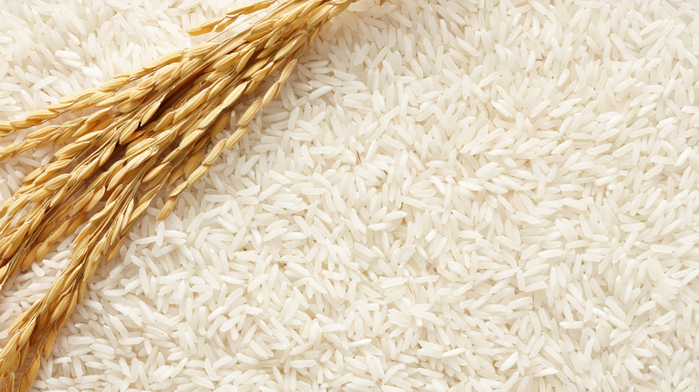
Es uno de los productos agrícolas más consumidos y se cultiva principalmente en zonas de la Costa ecuatoriana.
🌴 Costa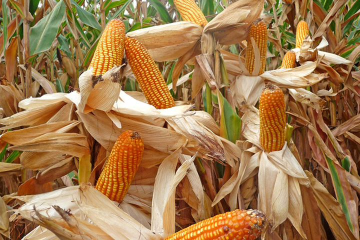
Producto tradicional que forma parte de la agricultura y alimentación de diferentes comunidades.
⛰️ Sierra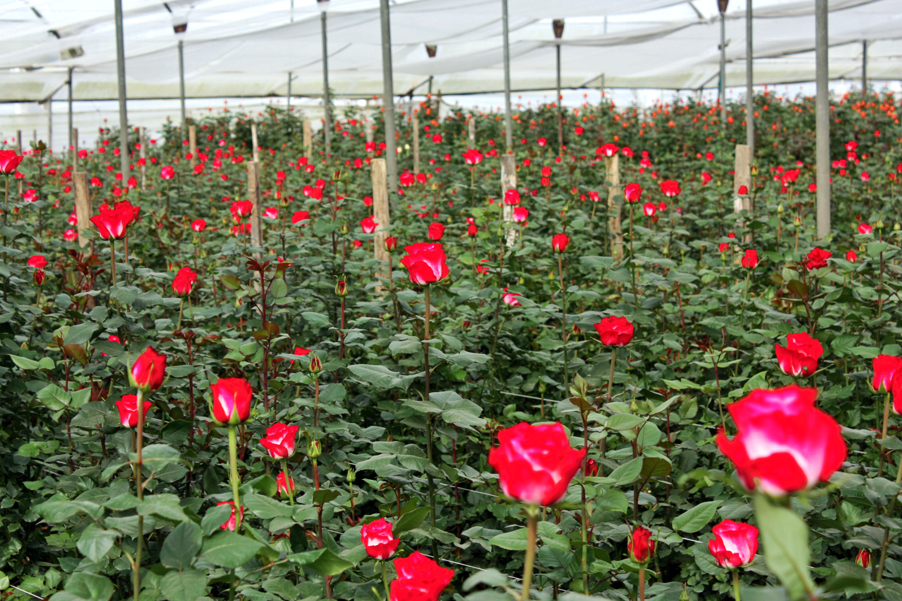
La producción florícola ecuatoriana aprovecha las condiciones naturales de varias zonas de la Sierra.
⛰️ Sierra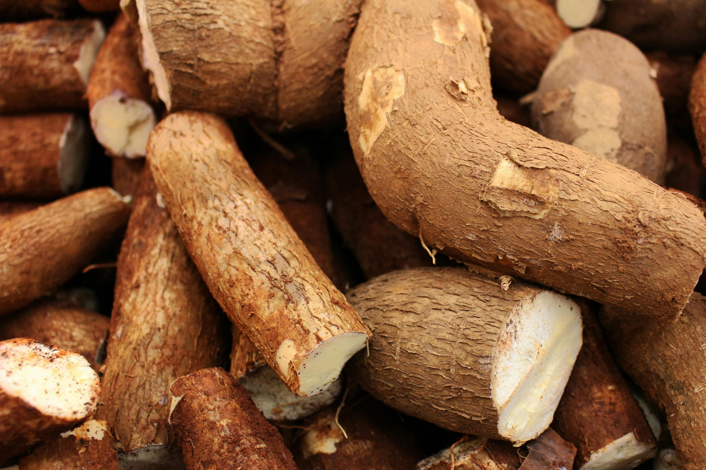
Es un cultivo tradicional de la Amazonía y forma parte de la alimentación de diferentes comunidades.
🌳 Amazonía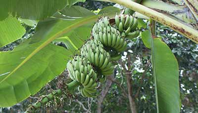
Cultivo presente en zonas amazónicas, utilizado como alimento y parte de la producción local.
🌳 Amazonía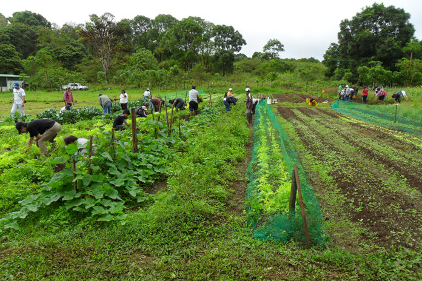
En Galápagos la producción agrícola debe considerar especialmente la conservación del ecosistema.
🐢 GalápagosNo se encontraron cultivos para esta región.
Las herramientas digitales pueden ayudar a los agricultores a utilizar mejor sus recursos.
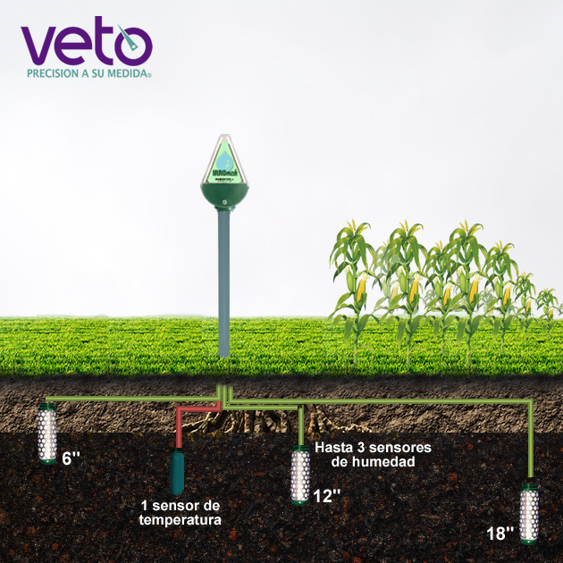
📡Permiten conocer información como la humedad del suelo y las condiciones del cultivo.
🌱 Agricultura de precisión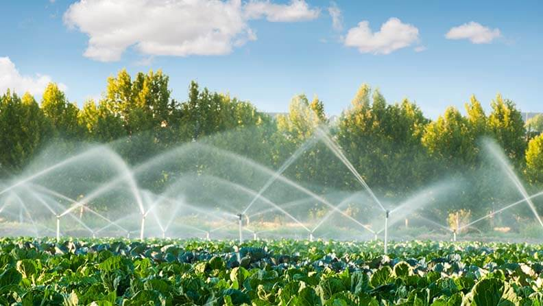
💧Ayuda a administrar el agua de acuerdo con las necesidades reales de los cultivos.
💧 Uso eficiente del agua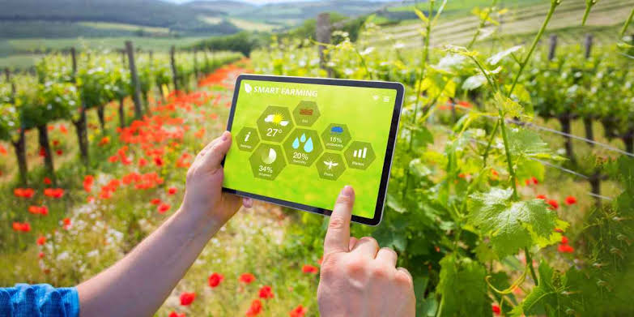
🚜Las herramientas digitales permiten registrar información y tomar mejores decisiones sobre la producción.
📊 Datos para decidir mejorResponde esta pregunta y descubre si conoces una de las principales aplicaciones de la tecnología en el campo.
Cuéntanos qué tema relacionado con la agricultura y tecnología te gustaría conocer.